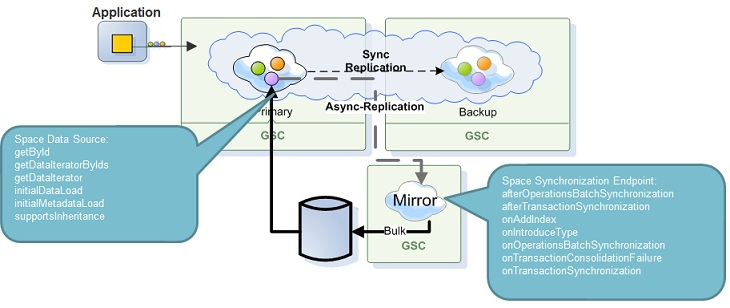

The SpaceSynchronizationEndpoint is used for persisting data from the space to an external storage. The following data is synchronized:
Batched write/update/remove operations.
Transactions.
Dynamic index creation.
Data type introduction.
The space synchronization endpoint can be called in synchronous or in asynchronous mode:

Dynamic index creation is essential since the space allows to create index dynamically during run time so this can be reflected to the storage solution.
In addition, the space synchronization endpoint API provides the following events interception: distributed transaction consolidation failure, successful batch and transaction synchronization.
Reading data from the data source is explained in the Space Data Source API page.
Space synchronization endpoint configuration can be done using a Spring bean or via code as shown in the following examples:
<?xml version="1.0"?>
<beans xmlns="http://www.springframework.org/schema/beans"
xmlns:xsi="http://www.w3.org/2001/XMLSchema-instance"
xmlns:os-core="http://www.openspaces.org/schema/core"
xsi:schemaLocation="http://www.springframework.org/schema/beans http://www.springframework.org/schema/beans/spring-beans-[%=Versions.spring-short%].xsd
http://www.openspaces.org/schema/core http://www.openspaces.org/schema/[%=Versions.product-version-short%]/core/openspaces-core.xsd">
<bean id="propertiesConfigurer" class="org.springframework.beans.factory.config.PropertyPlaceholderConfigurer"/>
<bean id="spaceSynchronizationEndpoint" class="com.gigaspaces.test.SpaceSynchronizationEndpointImpl" />
<os-core:embedded-space id="space" space-name="dataSourceSpace" space-sync-endpoint="spaceSynchronizationEndpoint" />
<os-core:giga-space id="gigaSpace" space="space" />
</beans>
<?xml version="1.0"?>
<beans xmlns="http://www.springframework.org/schema/beans"
xmlns:xsi="http://www.w3.org/2001/XMLSchema-instance"
xmlns:os-core="http://www.openspaces.org/schema/core"
xsi:schemaLocation="http://www.springframework.org/schema/beans http://www.springframework.org/schema/beans/spring-beans.xsd
http://www.openspaces.org/schema/core http://www.openspaces.org/schema/[%=Versions.product-version-short%]/core/openspaces-core.xsd">
<bean id="propertiesConfigurer" class="org.springframework.beans.factory.config.PropertyPlaceholderConfigurer"/>
<bean id="spaceSynchronizationEndpoint" class="com.gigaspaces.test.SpaceSynchronizationEndpointImpl" />
<os-core:embedded-space id="space" space-name="dataSourceSpace" space-sync-endpoint="spaceSynchronizationEndpoint" />
<os-core:giga-space id="gigaSpace" space="space" />
</beans>
SpaceSynchronizationEndpoint spaceSynchronizationEndpoint = new MySpaceSynchronizationEndpoint();
GigaSpace gigaSpace = new GigaSpaceConfigurer(new EmbeddedSpaceConfigurer("space")
.schema("persistent")
.cachePolicy(new AllInCachePolicy ())
.spaceSynchronizationEndpoint(spaceSynchronizationEndpoint)
.space()).gigaSpace();
The SpaceSynchronizationEndpoint abstract class should be extended in order to provide a custom behavior where needed.
There are three events the interceptor can receive and act upon:
This event is triggered upon distributed transaction consolidation failure, refer to Mirror or Gateway and Distributed Transactions for more info about scenarios triggering this event.
The space synchronization endpoint can get data about the current transaction participant (transaction part in a specific partition) for which the consolidation had failed and decide whether to commit or abort this participant data independently of the other participants. This is done by interacting with the ConsolidationParticipantData which is passed to the method as argument. This object contains all the relevant data, such as the operations and entries that are under this transaction participant, transaction metadata which contains its id, the source which participate in this transaction etc.
This event is triggered after the entire transaction is successfully replicated to the final target and the TransactionData contains all the data that the transaction consists of, including metadata and the source of the transaction.
When a consolidated transaction is executed, the source will contain the name of one of the participants.
This event is triggered after a batch of non transactional operations were successfully replicated to the final target, the operations batching is determined by the replication logic and is not reflecting the original client batch of operations if such existed. However, it maintains the original order of operations in the source. The OperationsBatchData contains the relevant data, which is the batch of operations itself and the source of this operations.
The methods which are in charge of data synchronization are: onOperationsBatchSynchronization and onTransactionSynchronization. Each of the synchronization methods receive a data item that includes the relevant data synchronization operations. A transaction contains the operations that are executed within its boundaries. A batch of operations contains the list of operations that were synchronized in this batch. Each of this operations is a DataSyncOperation which expose the details of the single data synchronization operation.
This API exposes the operation type, such as Write, Update, Remove and so on, as well as the entry itself where such exists. Before calling each of the getDataAsDocument, getDataAsObject and getTypeDescriptor, the corresponding "supports" methods must be called to verify that the operation indeed applies to the current entry. An invocation of getDataAsObject if the supportsDataAsObject methods return false, will throw an UnsupportOperationException.
public class MySpaceSynchronizationEndpoint extends SpaceSynchronizationEndpoint {
@Override
public void onOperationsBatchSynchronization(OperationsBatchData batchData) {
// Get operations in batch
DataSyncOperation[] operations = batchData.getBatchDataItems();
for (DataSyncOperation operation : operations) {
switch (operation.getDataSyncOperationType()) {
case WRITE:
System.out.println("WRITE operation");
break;
case UPDATE:
System.out.println("UPDATE operation");
break;
default:
System.out.println(operation.getDataSyncOperationType() + " operation");
}
// Print type name for either POJO or SpaceDocument
if (operation.supportsDataAsObject()) {
Object pojo = operation.getDataAsObject();
System.out.println("POJO: " + operation.getTypeDescriptor().getTypeName());
} else if (operation.supportsDataAsDocument()) {
SpaceDocument document = operation.getDataAsDocument();
System.out.println("SpaceDocument: " + document.getTypeName());
}
}
}
}
The DataSyncOperation allows you getting the Space ID (Key) and Routing Field values using the TypeDescriptor and the SpaceDocument. See below example:
public void onOperationsBatchSynchronization(OperationsBatchData operationsBatchData) {
for(DataSyncOperation dataSyncOperation : operationsBatchData.getBatchDataItems()) {
if (dataSyncOperation.supportsGetSpaceId()){
Object idValue = dataSyncOperation.getSpaceId();
// ... do something with the id
}
if (dataSyncOperation.supportsDataAsDocument()){
String routingPropertyName = dataSyncOperation.getTypeDescriptor().getRoutingPropertyName();
SpaceDocument spaceDoc = dataSyncOperation.getDataAsDocument();
Object routingPropertyValue = spaceDoc.getProperty(routingPropertyName);
// ... do something with the routing value
}
}
}
Remove and Change operation do not contain the routing value.
public class MySpaceSynchronizationEndpoint extends SpaceSynchronizationEndpoint {
@Override
public void onTransactionSynchronization(TransactionData transactionData) {
// If this is a consolidated distributed transaction print consolidation information
if (transactionData.isConsolidated()) {
ConsolidatedDistributedTransactionMetaData metaData = transactionData.getConsolidatedDistributedTransactionMetaData();
System.out.println("CONSOLIDATED TRANSACTION [id=" + metaData.getTransactionUniqueId()
+ ", participantsCount=" + metaData.getTransactionParticipantsCount() + "]");
// Single participant transaction
} else {
TransactionParticipantMetaData metaData = transactionData.getTransactionParticipantMetaData();
System.out.println("SINGLE PARTICIPANT TRANSACTION [id=" + metaData.getTransactionUniqueId()
+ ", participantId=" + metaData.getParticipantId() + "]");
}
// Get operations in transaction
DataSyncOperation[] operations = transactionData.getTransactionParticipantDataItems();
for (DataSyncOperation operation : operations) {
// ...
}
}
}
For implementation reference see our built in Hibernate and Cassandra implementations: DefaultHibernateSpaceSynchronizationEndpoint and CassandraSpaceSynchronizationEndpoint classes.
The following example will demonstrate how to implement a space synchronization endpoint that stores in some external data store the list of distributed transactions that failed to consolidate and aborts them for later manual decision. Note, that there is a regular case where consolidation may show a false failure as described in Gateway and Distributed Transactions. This example will handle this case as well.
public class ExampleSpaceSynchronizationEndpointInterceptor extends SpaceSynchronizationEndpoint
{
...
private SomeExternalDataSource externalDataSource = ...
@Override
public void onTransactionConsolidationFailure(ConsolidationParticipantData participantData)
{
TransactionParticipantMetaData metadata = participantData.getTransactionParticipantMetadata();
if(!externalDataSource.isExecuted(metadata.getTransactionUniqueId()))
{
DataSyncOperation[] operations = participantData.getTransactionParticipantDataItems();
externalDataSource.storeConsolidationFailedTransaction(metadata, operations);
}
participantData.abort();
}
@Override
public void afterTransactionSynchronization(TransactionData transactionData)
{
if(transactionData.isConsolidated())
externalDataSource.storeExecutedConsolidatedTransactionMetadaa(transactionData.
getConsolidatedDistributedTransactionMetaData().getTransactionUniqueId());
}
}